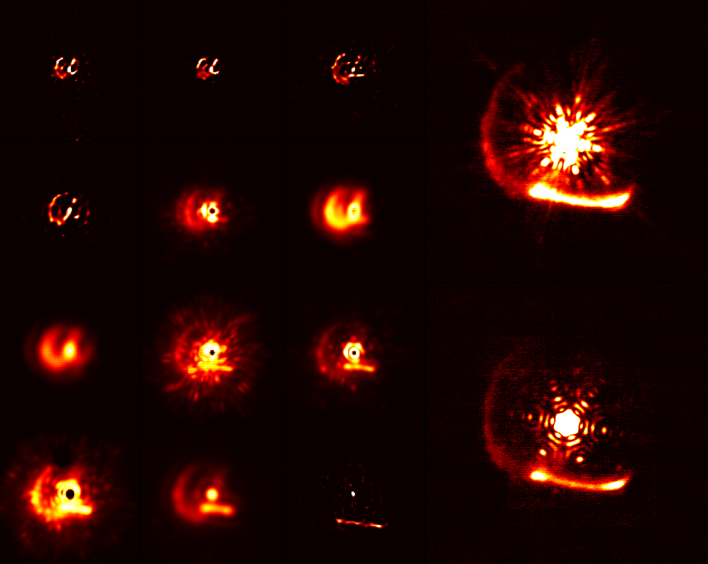
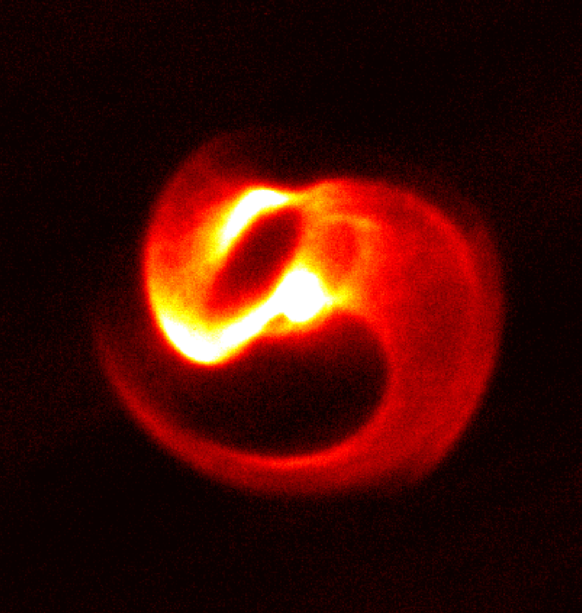

Press
[May 2025] Podcast: What can astronomy tell us about our place in the universe
[Oct 2022] Press release: The expanding dust shell of WR140

Light carries momentum that can push matter. Smaller solid particles such as dust are more strongly affected by this effect, however it is difficult to directly measure the trajectory of individual particles of dust and study how it could be affected by radiation pressure. We recently analysed close to two decades of high-resolution images of dust produced in WR140. Due to the interesting geometry in which dust in these systems form, we were able to accurately track the motion of individual dust features, which suggested that they were radially expanding away from the extremely luminous central stars. This allows us to better measure quantities like the efficiency with which momentum is exchanged between light and dust particles, as well as how much hidden gas might exist alongside the dust, which in turns tells us how efficiently mass ejected from these stars is able to form dust.
Simultaneous to the study was the delivery of images obtained by the James Webb Space Telescope of the same dust shells, which revealed not one but 20 concentric dust shells, which despite the complex geometry was closely described by our model. Read more about both studies from the University of Cambridge press release and reports from the ABC, BBC, CNN and The Guardian.
[Oct 2020] Press release: The Wolf-Rayet binary Apep

The most massive of stars end their evolution in a supernova explosion. In the leadup to it, they enter a Wolf-Rayet phase, during which they release a very large amount of mass as dust, sometimes in the form of intricately shaped spirals. We imaged a rare example of such a spiral over 3 years, precisely measuring the speed at which the dust spiral expands away from the star. We were also able to use very high resolution imaging methods to resolve the two stars at the core of this dust-generating engine, allowing us to construct a model that links the inner orbit of the stars with the outer shape of the dust which they create. This video visualises the model. Read more from the University of Sydney press release, CNN and The Conversation.